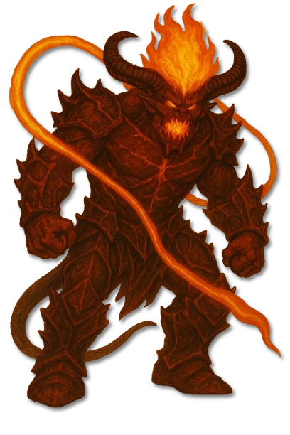
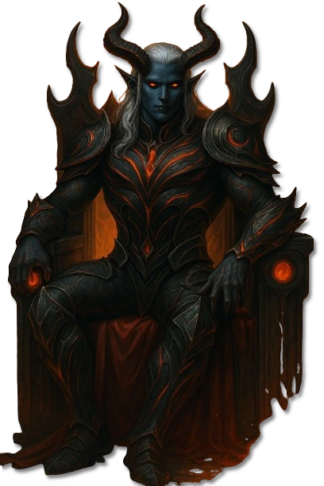
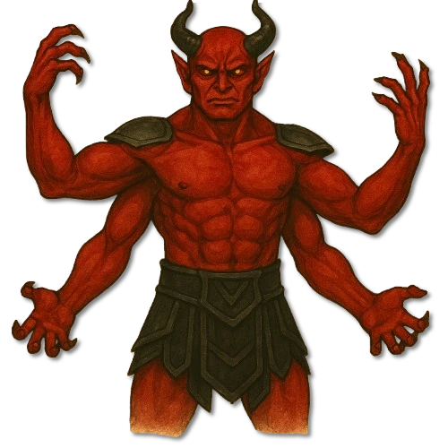

Dominanz
Asharon – Der Despot
Herrscher der Tiefen und Verkörperung unbedingter Herrschaft.

ErzteufelarchivInfernale Sphären · Die sechs Fürstenreiche Dagons · Archivblatt IV / 04-A
Sechs infernale Prinzen und unmittelbare Inkarnationen Dagons
Die sechs Erzteufel sind keine gewöhnlich aufgestiegenen Inferniiden, sondern lebende Abbilder grundlegender Eigenschaften Dagons. Asharon, Malekar, Nashira, Tamaraon, Zabaron und Balor herrschen über eigene Reiche, deren Landschaften und Bewohner den jeweiligen Aspekt ihres Fürsten widerspiegeln.

„Wo Dagon mit sich selbst ringt, erhebt sich ein Fürst; sein Reich ist die Narbe dieses Gedankens.“Verbotene Randglosse aus dem Prinzenarchiv
Sechs Merkmale · Skala 1–10
Diese Fürstentafel bewertet keine Tiermerkmale. Sie ordnet die Erzteufel nach ihrer unmittelbaren Dagonbindung, ihrer Herrschaft über ein eigenes Reich und der Macht ihrer personifizierten Aspekte ein.
Quelle der Einordnung: Aus Ursprung, Fürstenrang, Reichsbindung, gegenseitigen Machtkämpfen und der an Dagon gebundenen Unzerstörbarkeit abgeleitet
Erzteufel sind die sechs höchsten Fürsten in Dagons Linie. Sie wurden nicht durch gewöhnliche Läuterung oder Verderbnis geschaffen, sondern unmittelbar aus der Essenz des infernalen Gottes geformt.
Jeder Erzteufel verkörpert einen grundlegenden Zug seines Schöpfers. Dadurch handelt er eigenständig und bleibt zugleich ein lebendes Bild eines größeren, widersprüchlichen Ganzen.
Die Fürstenreiche sind keine neutralen Länder. Feuer, Tiefe, Schatten, Spaltung und Verwüstung übersetzen den jeweiligen Aspekt in Landschaft, Architektur und die Ordnung ihrer Bewohner.
Asharon steht für Dominanz, Malekar für Rebellion, Nashira für Verrat, Tamaraon für Spaltung, Zabaron für Hass und Balor für Zerstörung. Die alte Übersicht überliefert daneben die Titel Despot, Aufrührer, Spalterin, Renegantin, Vertilger und Auslöscher.
Die ständigen Machtkämpfe der Prinzen spiegeln Dagons eigene Zerrissenheit. Balor, einst Geweihter und Vollstrecker, wandte sich gegen die bestehende Ordnung und zog seine besonderen Sprösslinge in den Aufruhr.
Solange Dagon besteht, können seine unmittelbaren Inkarnationen nicht endgültig ausgelöscht werden. Niederlagen schwächen ihre Erscheinung und ihren Einfluss, trennen den Aspekt aber nicht dauerhaft von seinem Ursprung.
Eine direkte Konfrontation mit einem Erzteufel gleicht einem Angriff auf sein gesamtes Reich. Aussicht versprechen nur genaue Kenntnis des verkörperten Aspekts, geweihte Gegenmacht und die Ausnutzung der Rivalitäten zwischen den Prinzen.